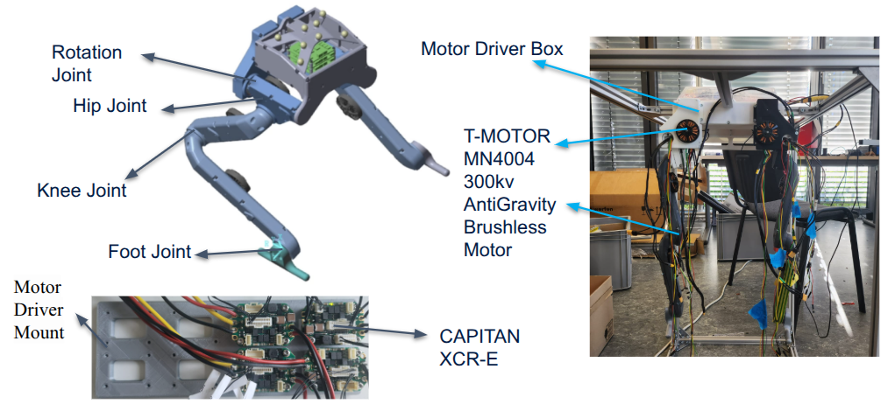
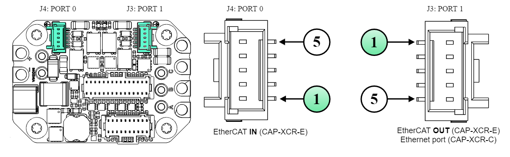
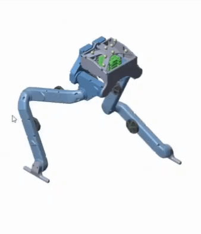
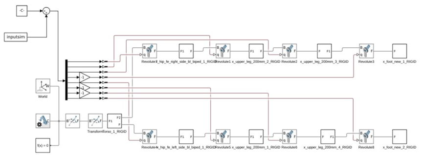
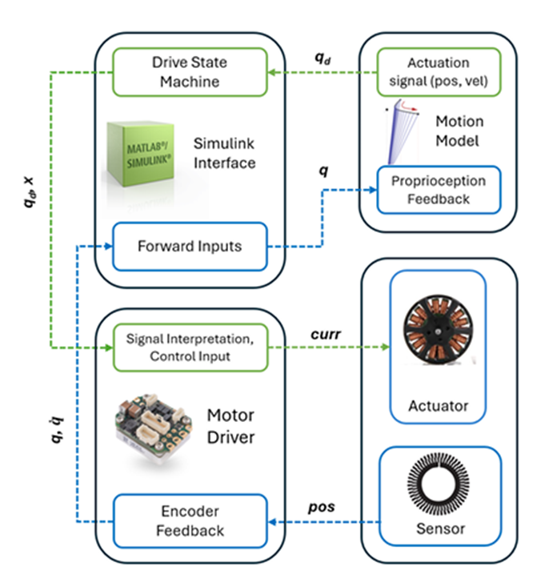
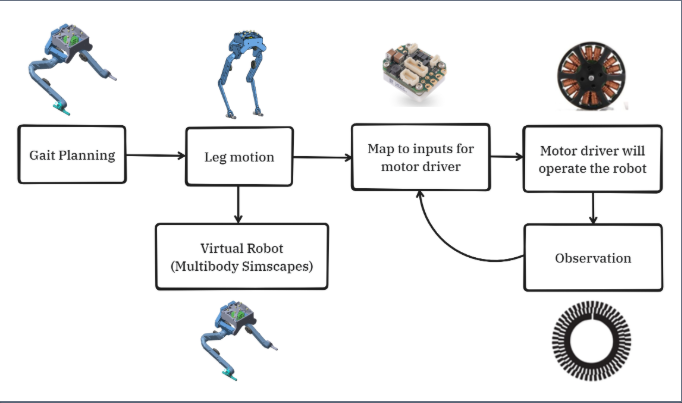
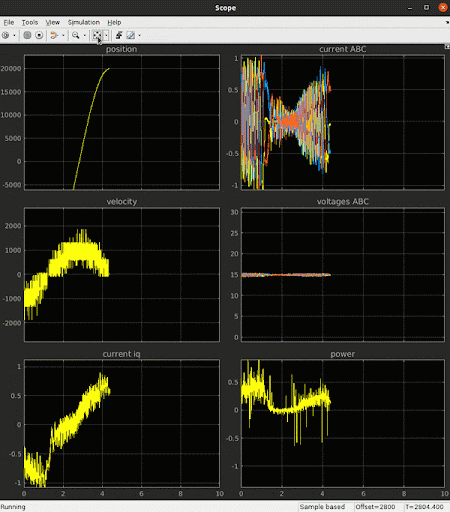

This semester, we took on the challenge of developing the DODO bipedal robot, aiming to mimic the fluid, natural locomotion of birds. Starting with just a mechanical shell and eight motors, we built a complete closed-loop control system from scratch. This post documents our journey of wiring the hardware, tuning the motor drivers, generating gait patterns using the Linear Inverted Pendulum Model (LIPM), and bridging MATLAB/Simulink with real-time TwinCAT 3 to make the robot actually move.
🐦 1. The Challenge: Giving Life to a Mechanical Bird
Developing bipedal robots that mimic the natural movements of birds is an ongoing challenge in robotics. At the beginning of this semester, we were handed the DODO project: a bipedal robot equipped with eight high-performance motors.
There was just one catch: it had no "brain" and no "nervous system."
While the motors were mechanically capable of driving motion, the robot lacked a control module and any means of communication between the high-level motion planning and the physical actuators.
Our mission was clear: Establish a comprehensive, real-time communication framework and design a control architecture that could translate abstract, predefined walking commands into precise, physical bird-like locomotion.
⚡ 2. Hardware Setup & Wiring: Building the Nervous System
Before writing any control algorithms, we had to get our hands dirty with the hardware.
The robot's legs feature four main joints: Foot, Knee, Hip, and Rotation. To power these, we utilized T-MOTOR MN4004 300kv AntiGravity Brushless Motors—known for their high efficiency in UAV and robotics applications.
The Motor Driver Dilemma
To control all 8 joints, we ideally needed eight CAPITAN XCR-E motor drivers. However, due to initial hardware constraints, we only had four available. We decided to focus on fully controlling one leg first. To keep the wiring neat and prepare for future expansion, we custom-designed a motor driver mount capable of housing the full set of eight drivers later on.

Figure 1: The robotic leg assembly, highlighting the key joints and motor components.
Wiring it All Together
Wiring the drivers requires absolute precision. I divided the setup into four critical paths:
- Power Supply (P1): A stable 5V-24V DC connection. Polarity is unforgiving here—getting it wrong means frying the board.
- Motor Connections (P2): The classic three-phase configuration (PH_A, PH_B, PH_C), which is the foundation for precise speed and torque control in brushless motors.
- Encoder Feedback (J1): The key to closed-loop control. The encoders feed incremental signals (A/B channels) and an index pulse (Z-channel) back to the CAPITAN driver.
- Communication & STO: We used an EtherCAT daisy-chain configuration for high-speed, synchronized communication across all drivers. Finally, we wired up the Safe Torque Off (STO) functionality to ensure we had a reliable emergency stop mechanism.

Figure 2: EtherCAT daisy-chain topology for synchronized multi-motor control.
🛠️ 3. Tuning the Muscles: MotionLab 3 Configuration
With the hardware connected, the next step was configuring and tuning the drivers using the MotionLab 3 software.
- Limits & Motor Specs: Based on the T-MOTOR manual, we set the motor pole pairs to 12 and capped the maximum velocity limit at 90 revolutions per second.
- Electrical Identification: We ran an automated identification process to map out the RL (Resistance-Inductance) mathematical model of our motors.
- Frequency Design (Tuning): For the velocity loop, we set the bandwidth to 40 Hz and fine-tuned our PI controller (Kp = 0.50263, Ki = 1.5004). The position loop relied primarily on P control. Every time we adjusted a parameter, we had to "Save to the Drive" and run a physical verification to ensure the real-world response matched our expectations.
🧠 4. The Brains: Bridging MATLAB, Simulink & TwinCAT 3
This is where the magic happens. A beautifully tuned motor is useless without intelligent commands. We needed to bridge our high-level gait simulations with the low-level industrial hardware.
Simscape Multibody & LIPM Gait Generation
First, we built a highly accurate 3D physical model of the robot in Simscape Multibody. To generate the walking pattern, we implemented the Linear Inverted Pendulum Model (LIPM).

Figure 3(a): Simulated LIPM gait model.
The LIPM computes the ideal Center of Mass (CoM) trajectory to keep the robot balanced. We then used
Inverse Kinematics to calculate the exact angles required for the Hip roll, Hip pitch, Knee pitch,
and Foot pitch joints over time ($t$). This combined data formed our core driving signal:
inputsim.

Figure 3(b): The core Simulink model controlling the robot's LIPM gait.
The Magic Bridge: TE1410 TwinCAT Interface
Simulink is great for simulation, but it’s not a real-time hardware controller. To bridge this gap, we used TwinCAT 3 (an industrial PC-based control platform by Beckhoff) and the TE1410 Interface.
Here is how the data flows:
- Simulink runs the high-level state machine and computes desired joint positions/velocities.
- These signals are passed via ADS blocks to the TwinCAT runtime.
- TwinCAT translates these into real-time commands and sends them over EtherCAT to the CAPITAN drivers.
- The drivers read the physical encoders and send the real-time state back to Simulink.

Figure 4: The full-loop communication architecture bridging Simulink, TwinCAT, and the physical motors.
🏗️ 5. Architectural Thinking: The 3-Level Control System
As the system grew in complexity, it became clear that we needed a strict Hierarchical Control Architecture. I structured the system into three distinct tiers:
- High-Level Control (Intent/Cognition): Operates on a longer timescale (seconds to minutes). It handles abstract, discrete decision-making, like path planning, overall mission objectives, and interpreting the required movement intent.
- Mid-Level Control (Strategy): The bridge. It takes the high-level intent and generates actionable strategies—like running the LIPM algorithm to calculate the CoM trajectory and determine exact foot placements to maintain balance.
- Low-Level Control (Execution): Operates in strict real-time (often under a millisecond). It handles high-frequency closed-loop servo control, processing encoder feedback, outputting exact currents to the motors, and managing safety protocols like STO.

Figure 5: Hierarchical 3-Level Control System Architecture separating cognition, strategy, and execution.
This decoupling made our codebase incredibly robust and much easier to debug.
📊 6. The First Test: Successes and Lessons Learned
To validate our entire pipeline, we ran a position control experiment using a Sinusoidal wave signal, testing all four joints of the single leg individually.
The Good News:
Looking at the oscilloscope data, the system successfully tracked
the position commands! Speed, current, and voltage all exhibited clear sinusoidal waves (albeit with
some expected real-world noise). This proved that our
MATLAB <-> TwinCAT <-> EtherCAT bridge was fully functional.
The Reality Check (The Hip Joint):
While most joints performed beautifully, the
Hip Joint struggled. The data showed that the physical load on the hip was too
high, and the current being supplied was too low. In certain dynamic postures, it simply couldn't
keep up with the sine wave.

Rotation Joint

Hip Joint (Struggled)

Knee Joint

Foot Joint

Figure 6: Oscilloscope data from the sine wave tracking test. Position tracking was accurate, but revealed a power bottleneck at the hip joint.
🌱 7. Final Thoughts & What's Next
Going from a pile of mechanical parts and idle motors to a fully integrated, real-time control system bridging MATLAB and industrial EtherCAT drivers has been an incredibly rewarding journey.
That failure with the hip joint? That’s my favorite part of the project. It’s a harsh but beautiful reminder that no matter how perfect your Simulink mathematical model is, gravity, friction, and inertia in the physical world are the ultimate judges.
My next steps for the DODO project:
- Hardware Optimization: Re-evaluate the torque requirements for the hip joint. We will either adjust the driver's current limits or upgrade to a higher-torque motor.
- Scaling Up: Install the remaining 4 drivers, complete the wiring for the second leg, and scale our software to control all 8 joints simultaneously.
- The First Steps: Deploy the LIPM gait algorithm onto the fully assembled physical robot and watch DODO take its first real steps.
Building robots is hard, but seeing your code literally move the physical world makes every frustrating debugging session totally worth it.